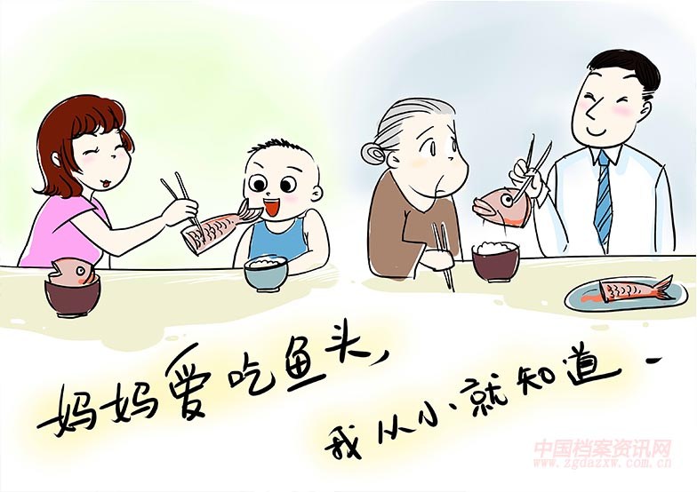

“觅母（文化复制因子）”对人际关系的影响及调适方案
摘要：笔者引入生物进化学中的复制因子概念，讨论"文化复制因子" - 觅母在人际交往中会造成的负面影响，并为解决问题提供可行方案的猜想。 关键词：人际交往 人际关系 生物进化学 文化复制因子 一、"觅母"概念的引入及其与人际交往的联系 在英国...
摘要：笔者引入生物进化学中的复制因子概念，讨论”文化复制因子” - 觅母在人际交往中会造成的负面影响，并为解决问题提供可行方案的猜想。
关键词：人际交往 人际关系 生物进化学 文化复制因子
一、“觅母”概念的引入及其与人际交往的联系
在英国著名演化生物学家理查德·道金斯（Richard Dawkins）的著名作品《自私的基因》中，他提出生物进化的内驱动力可以理解为：基因作为一种复制因子，通过拥有一系列特性得以广泛传播、香火不断，而所有的生物，不过是基因为了达成自己”自私”目标的”生存机器”。其最惊人的断言是，并不是生物为了繁衍而有基因的存在，而是基因将生物当成了奴役的工具。这并不只是比喻意义上的文字游戏，相反，这对我们后续的理解有巨大的影响。
在这样的一本生物科学概念科普作品的临近尾声之处，作者利用联想与类比的方法，提出了文化复制因子 - “觅母（Meme）”的概念。他写道，“曲调、概念、妙句、时装、制锅或建造拱廊的方式等都是觅母。正如基因通过精子或卵子从一个个体转移到另一个个体，从而在基因库中进行繁殖一样，觅母通过广义上可以称为模仿的过程从一个大脑转移到另一个大脑，从而在觅母库中进行繁殖。一个科学家如果听到或看到一个精彩的观点，会把这一观点传达给他的同事和学生，他写文章或讲学时也提及这个观点。如果这个观点得以传播，我们就可以说这个观点正在进行繁殖，从一些人的大脑散布到另一些人的大脑。”
首先，“觅母”理论是合理的。观念、知识、看法都是觅母。我们获得的观念、知识和看法，在某种程度上都是来自已经存在的事物。我们不断地学习他人给予我们的文化，利用这些文化去创造新的知识。辩证地说，全新的觅母也可以被创造出来。像基因可以发生变异一样，觅母也会发生改变，从而产生新的形态。总而言之，我们的文化形成过程以及我们与文化的互动过程，可以在抽象层面上认为是觅母的复制以及变异过程。
其次，“觅母”理论对我们讨论人际关系是有启迪意义的。在宏观上来说，人际关系是存在语境的，或者用我们更熟悉的话语来说，就是社会的文化生态对我们人际交往有影响。社会的文化生态就是由许多成功地大量复制的觅母搭建起来的，正如语境是由观念、知识。看法勾勒的。在微观上来说，我们对每一个个体的态度都是觅母，它们可能会也可能不会传达给他人，取决于它们的繁殖能力 - 从众心理、皮格马利翁效应其实都是觅母在复制的过程。因此我们在分析人际关系困扰及调适的过程中，觅母可以是一种很好的科学切入点。
在前文笔者指出过，并不是生物为了繁衍而有基因的存在，而是基因将生物当成了奴役的工具。同样作为拥有繁殖倾向的复制因子觅母，也会将我们的大脑当做温室，毫无节制地滋生。在人际关系中，觅母这种大量繁殖的目标可能会造成灾难性的后果。我们不妨来看一个实例。
在决策科学书籍《噪声》中，作者丹尼尔·卡尼曼（Daniel Kahneman）等人以一段精彩的心理描写增色了这样一个我们熟悉的场景（选段中的所有可能的”觅母”复制语句已被下划线体现出来）。
“我们可以想象在一间大办公室中有10个人，他们在决定要雇用谁来担任一个重要职位。候选人有3位，分别是托马斯、山姆和朱莉。假设群体成员是按顺序发表自己的观点的，每一个人都会认真聆听其他人的判断。阿瑟第一个发言，他认为托马斯是最佳人选。芭芭拉现在知道了阿瑟的判断，如果她也认为托马斯是最佳人选，她肯定会认同阿瑟的意见。假如她不确定谁是最佳人选而她信任阿瑟，她可能也会认同托马斯是最佳人选。因为她足够信任阿瑟，所以她支持了阿瑟的判断。
现在轮到查尔斯发言。阿瑟和芭芭拉已经表明了他们想雇用托马斯，但查尔斯有自己的想法。基于他自己掌握的有限信息（他非常清楚自己的信息很有限），他认为最佳人选不是托马斯，而是朱莉。虽然查尔斯有自己的想法，但他也有可能会忽视自己已知的信息，而只是附和阿瑟和芭芭拉。如果此事发生，那并不是因为查尔斯懦弱，而是因为他是一个尊重他人的倾听者。他可能只是认为：阿瑟和芭芭拉都选托马斯，他们肯定有自己的理由。
第四位发言人是戴维，除非戴维认为他自己掌握的信息确实比前几人更有说服力，否则他也会附和前几个人的意见。如果戴维也这样了，那么戴维就处在一个”信息级联”中。事实上，如果戴维有非常充分的理由认为阿瑟、芭芭拉和查尔斯的选择是错误的，那么戴维可能会表示反对。但如果他缺乏充分的反对理由，那么他就会做出和前几个人同样的选择。
重要的是，查尔斯和戴维可能了解托马斯或其他候选人的一些信息，并且有自己独到的看法，而阿瑟和芭芭拉并不知道这些信息和独到的看法。如果这些信息得以分享，那么这些非公开的信息可能会改变阿瑟和芭芭拉的意见。如果查尔斯和戴维先发言，他们不仅能表达关于候选人的意见，而且可能提供对其他决策者产生影响的信息。但由于查尔斯和戴维是后发言的，所以他们的非公开信息就只有自己知道。
假设现在大家也想听听后续参与投票的人 - 埃丽卡、弗兰克和乔治的观点。如果阿瑟、芭芭拉、查尔斯和戴维都认为托马斯是最佳人选，即使埃丽卡等人有理由认为其他人选可能更合适，阿瑟等人也还是会做出相同的选择。当然，如果答案明显是错的，埃丽卡等人会反对这种越来越趋于一致的意见，但如果错误没有那么明显呢？这个例子的吊诡之处在于，阿瑟最初的判断启动了一个过程，其他人被引导进了信息级联中，即便有些支持托马斯的人实际上根本没有任何看法，甚至有人认为托马斯根本不是最佳人选，但最终结果依然是所有人都选择了托马斯。
当然，这个例子是人为设定的，然而在各种群体中，类似的事情经常发生。人们倾向于向他人学习，如果先发言的人似乎喜欢某个事物或者想去做某件事，人们会表示认同。如果人们不怀疑这些先发言的人，或缺少一个明确的理由认为后者是错误的，那么至少在这些情况下，人们会选择认同。“
所以我们清楚地看到了，觅母可能会在我们的人际关系中扮演一种非常微妙的角色，它可能会扭曲我们的观念，让我们对他人做出并不公平的评价；它可能会让我们自己的声音被吞噬，遭到不公平的待遇。我们还可以利用我们的经验，做进一步的联想。是不是经常有人因为遭到众人或者少数人的诽谤或者轻视，而被困在不健康的人际关系中无法找到突破口。或者有的时候，我们明明可以做出理智的决定或保持一个理智的看法，但是却由于觅母在我们的大脑里发挥作用，我们自觉地摒弃了应该坚持的一种状态。觅母入侵后我们在人际关系中的行为在狭义上是理性的，因为的确经过了大脑的思考。根本的问题在于觅母入侵的过程可能是不理性的，我们可能被迫接受了或者不经意间接受了某种觅母进入我们的大脑，而这种觅母本身是有毒的，我们在它的操纵下自然会做出不利于人际关系中的自我和他人的行为。
毋庸置疑，我们应该考虑从觅母复制的角度去调适我们的人际关系。
- 利用”觅母”的特性调适人际关系
作为一个复制因子，“觅母”想要成功地大量复制，它必须拥有成功大量复制的基因的特性，更加普遍性地说，它必须拥有成功从众多复制因子中占据数量领先地位的复制因子拥有的特点。一个成功的复制因子有三个特性：（1）长寿性、（2）高速繁殖性、（3）复制准确性。在论文的第二部分，笔者将要从这三个特性方面提出调适人际关系的可能方法（本文提出的调适方案将全部适用于个人即微观层面，由于篇幅原因宏观上的调控将不进行详细讨论。我们从直觉上就可以提出一些方法，比如政府对社会风气的控制等）。
（1）长寿性
如果一个”觅母”在我们的大脑里如飞鸿踏雪般不留痕迹，我们当然不用去担心它的影响。但是当觅母在我们的大脑里可以扎根，就可能对我们的人际交往带来极其不利的影响。
漫画《妈妈爱吃鱼头，我从小就知道》形象地体现了觅母长寿性可能带来的对人际关系的不利影响之一（见文末附录图片）。在这个例子中，它带来不利影响是缺乏共情。需要指出的是，这只是觅母长寿性可能导致的许多不利影响中的一个具体体现。其他的不利影响包括并不限于刻板印象、保守迂腐。至于这些不利影响是否存在内在一致性或者本质联系，本文不做详细探讨。
从这个角度，我们有两个方法来调适觅母导致的人际关系困扰。1、养成进行反思的习惯。我们要时常去思考自己已有的观念、知识、看法是否在客观层面是正确的，或者是在我们的人际交往中是有利的。我们的思维模式不应该是”按照我已有的觅母，我
应该怎么做”，而是”我现在的觅母适合我和他人，以及环境吗？我应该怎么做”。2、培养开放的思维。我们可以通过不断地接受，或者更保守地说，不断地了解新的思想，来更新我们大脑中的觅母，使我们的人际关系是动态的，人际交往是灵活的。
- 高速繁殖性
在网络时代，没有人会质疑觅母的高速繁殖性。事实上，科技在觅母的疯狂复制中起到了推波助澜的作用。
对于这一个特性，我们要从觅母本身的不同来分类讨论调适方案。我们先引入概念”布道者”和”信徒”。我们很容易理解，布道者就是觅母的原拥有者，信徒则是潜在接受者。
对于中性的觅母，我们要求”布道者”谨言慎行，沉默是金。中性的觅母本身并没有利弊，但是如果某一种中性觅母占据了太多人的大脑，就会抑制其他觅母的生长，在人际关系的网络中自然而然地形成排异己性，形成不公平的人际关系网络。同时，整个系统变得十分不灵活。对于恶性的觅母，我们要求”信徒”在接受或了解过程中就保持理智、警惕性，这是在人际交往过程走向难以阻止的深渊前最有效用的方法。
- 复制准确性
我们可以再次运用”布道者”和”信徒”的概念。在前面，笔者给出建议，“对于恶性的觅母，我们要求”信徒”在接受或了解过程中就保持理智、警惕性”。现在，我要给信徒们一个进一步的要求。在最终选择接受或不接受一个觅母的时候，应该对其进行改造，也就是我们中国人常说的”去其糟粕，取其精华”。这样我们就可以从语义层面解决觅母的复制准确性问题。
在文末，笔者意识到文章可能将”觅母”描绘为了人际交往中的不利因子。事实上它不是。回到生物学上，没有人会指责基因对复制和繁殖的渴望，我们只是想避免生物入侵、基因入侵等现象。我们研究”觅母”，其实只是想给这头偶尔失控的导致我们人际交往出现困境的野兽套上缰绳。最理想的人际交往过程中，我们将与”觅母”和谐共处，文化的生态会充满动态活力而又稳定可靠。
参考文献
《The Selfish Gene 40th Anniversary Edition》Richard Dawkins
《Noise: A Flaw in Human Judgment》Daniel Kehneman, William Collins
附录：《妈妈爱吃鱼头，我从小就知道》

图片来源：中国档案资讯网